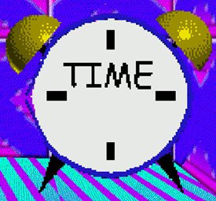

"Moldy's Alarm Clock" (or just "MAC") is the 1st Prize replacement in "Moldy's Basics In Being Le Modder"(/"MBIBLM").
Aliases
Moldy's Alarm Clock, MAC, Alarm Clock, Clock.
Appearance
Moldy's Alarm Clock appears as a poorly modeled Alarm Clock, it has two yellow bells poking out from the top on each side, and two small black legs. It's main "body" is a large white screen with the text "TIME" on it and four small thick black lines on said green on the left, right, top, and bottom, of the screen. The screen itself is blue-rimmed.
Gallery

Trivia
It was built by Baldi for Moldy to help him wake up.
It is NOT the same as the Alarm Clock found in Baldi's Basics.